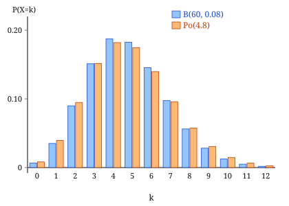

<script>if(location.hostname.endsWith('onrender.com'))location.replace('https://math-sandbox.github.io'+location.pathname+location.search+location.hash)</script>
<section class="theory" data-section="S2-2.3">
<h2>2.3 The Poisson distribution as an approximation to the binomial distribution</h2>
<p class="src">Based on Cambridge International AS &amp; A Level Mathematics: Probability &amp; Statistics 2 Coursebook (Jayne Kranat), Chapter 2 The Poisson distribution, printed pp.36–39 (Key point 2.5, the glassware comparison, Exercise 2C). Own wording and new numbers. The normal approximation to the Poisson distribution and hypothesis tests are left to later subsections, as in the book.</p>
<p class="key-words"><strong>Key words:</strong> <em>Poisson approximation</em>, <em>Poisson distribution</em>, <em>Poisson parameter</em></p>
<p>A binomial random variable \(X\sim\mathrm{B}(n,p)\) counts the number of successes in \(n\) independent trials, each with success probability \(p\). When \(n\) is large and \(p\) is small, so that the event is rare, the distribution of \(X\) is close to a Poisson distribution with the same mean. This is the <strong>Poisson approximation</strong> to the binomial distribution:</p>
<p>\[\mathrm{B}(n,p)\approx\mathrm{Po}(np),\]</p>
<p>using the Poisson parameter \(\lambda=np\). As a guide, the approximation is used when \(n\gt 50\) and \(np\lt 5\). A common error is using a Poisson approximation when n is not large or np is not moderate.</p>
<p>The match improves as \(n\) increases. The mean of \(\mathrm{B}(n,p)\) is already \(np\). Its variance is \(np(1-p)\), which approaches \(np\) when \(p\) is small, and that is the variance of \(\mathrm{Po}(np)\).</p>
<div class="worked-example">
<h4>Worked example 1: Stating the approximating distribution</h4>
<p class="src">Book: the glassware illustration, p.38, and Key point 2.5, p.37; new parameters</p>
<p>The random variable \(X\) has the distribution \(\mathrm{B}(200,0.02)\). State a suitable approximating distribution, and justify it. Use the approximation to find \(\mathrm{P}(X=0)\), correct to \(3\) significant figures.</p>
<ol class="steps">
<li>Here \(n=200\gt 50\) and \(np=4\lt 5\), so a Poisson approximation is suitable, and \(X\) may be treated as \(\mathrm{Po}(4)\). <span class="mark">M1</span></li>
<li>\(\mathrm{P}(X=0)=\mathrm{e}^{-4}=0.0183\) to \(3\) significant figures. <span class="mark">A1</span></li>
</ol>
<p class="final"><strong>Answer:</strong> \(\mathrm{Po}(4)\); \(0.0183\) to \(3\) significant figures</p>
</div>
<p></p>
<p>The figure compares \(\mathrm{B}(60,0.08)\) with \(\mathrm{Po}(4.8)\). The means are equal, \(n=60\) is reasonably large, and the two bar charts follow each other closely, even though \(np=4.8\) is only just under the usual guide of \(5\).</p>
<div class="worked-example">
<h4>Worked example 2: Finding the Poisson parameter</h4>
<p class="src">Book: Key point 2.5 and Exercise 2C style, pp.37–39; new parameters</p>
<p>A machine produces items independently, and the probability that an item is imperfect is \(0.03\). In a batch of \(120\) items, let \(X\) be the number of imperfect items. Write down the Poisson parameter of a suitable approximating distribution.</p>
<ol class="steps">
<li>\(X\sim\mathrm{B}(120,0.03)\). Then \(n=120\gt 50\) and \(np=3.6\lt 5\), so a Poisson approximation is suitable. <span class="mark">M1</span></li>
<li>The Poisson parameter is \(\lambda=np=3.6\). <span class="mark">A1</span></li>
</ol>
<p class="final"><strong>Answer:</strong> \(3.6\)</p>
</div>
<h3>Quick check</h3>
<div class="quick-check" data-q="QC1">
<p>The random variable \(X\) has the distribution \(\mathrm{B}(80,0.04)\). What is the Poisson parameter of a suitable approximating distribution?</p>
<p class="final"><strong>Answer:</strong> \(3.2\)</p>
</div>
<div class="quick-check" data-q="QC2">
<p>The random variable \(X\) has the distribution \(\mathrm{B}(200,0.015)\). What is the Poisson parameter of a suitable approximating distribution?</p>
<p class="final"><strong>Answer:</strong> \(3\)</p>
</div>
<div class="quick-check" data-q="QC3">
<p>The random variable \(X\) has the distribution \(\mathrm{B}(100,0.04)\). What is the Poisson parameter of a suitable approximating distribution?</p>
<p class="final"><strong>Answer:</strong> \(4\)</p>
</div>
</section>
